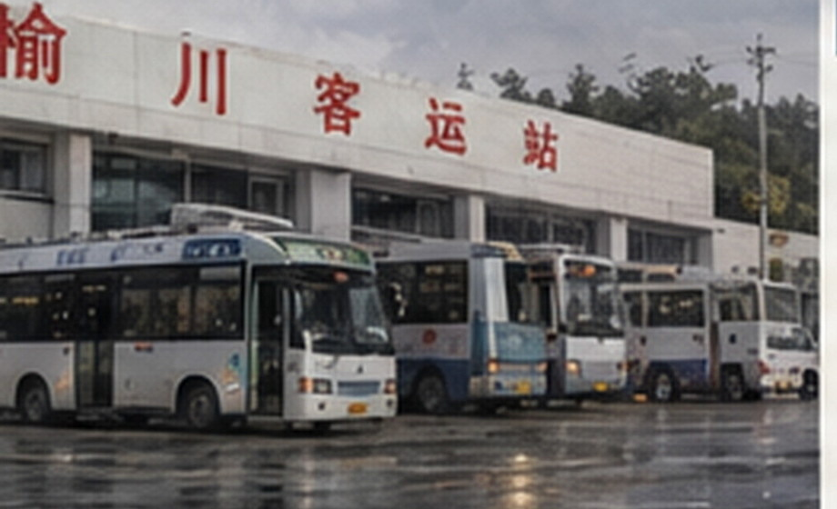

专题结页 / 2026-09-30
旧站停止使用

榆桥旧站南门外侧，2026年9月
赵宁后来补了一件小事，这些年父亲来接她、送她，都只到旧站外面的雨棚，车到了，他帮她把箱子搬下来，车要走，他就站在那里，看她自己进站
她以前一直觉得父亲只是嫌大厅里人多
看过附页以后，她停了一会儿，说：“这个我现在也没法问了，所以就这样吧”
榆桥客运站旧站于2026年9月30日停止使用

赵宁后来补了一件小事，这些年父亲来接她、送她，都只到旧站外面的雨棚，车到了，他帮她把箱子搬下来，车要走，他就站在那里，看她自己进站
她以前一直觉得父亲只是嫌大厅里人多
看过附页以后，她停了一会儿，说：“这个我现在也没法问了，所以就这样吧”
榆桥客运站旧站于2026年9月30日停止使用